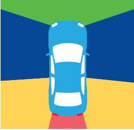
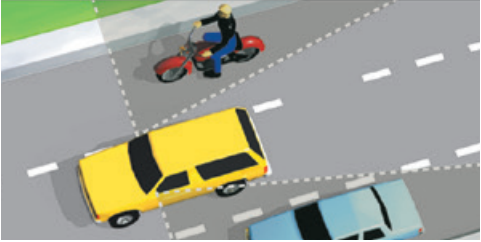

Be Aware of Your Surroundings
To drive safely, you need to know what is around you. This helps you make good decisions and react to hazards on the road. This image shows the areas around your vehicle.
- Green: Ahead of you.
- Blue: Next to you.
- Yellow: Blind spots.
- Red: Behind you.

Scan Your Surroundings
To give yourself time to react, avoid last minute moves and hazards, always keep your eyes moving and scan the road at least 10 seconds ahead of your vehicle.
Tailgating (Following Too Closely)
Tailgating makes it harder for you to see the road ahead because the vehicle in front of you blocks your view. You will not have enough time to react if the driver in front of you brakes suddenly. Use the three-second rule to ensure a safe following distance and avoid a collision. Following other vehicles at a safe distance gives you enough time to react if another driver makes a mistake.
If a vehicle merges in front of you too closely, take your foot off the accelerator. This creates space between you and the vehicle ahead.
Create more space in front of your vehicle when:
- A tailgater is behind you. Maintain your course and speed. Then, when safe to do so, merge right to change into another lane and allow the tailgater to pass.
- Following motorcyclists on metal surfaces (bridge gratings, railroad tracks, etc.), and gravel.
Know What is At Your Side
Be aware of what is on each side of you. To maintain enough space to
maneuver safely and react to other drivers:
- Do not stay in another driver’s blind spot.
- Avoid driving directly alongside other vehicles.
- Make space for vehicles entering freeways, even if you have the right-of-way. Be ready for rapid changes and watch for signals from other drivers.
- Keep space between your vehicle and parked vehicles.
- Look both ways, even at intersections where traffic has a red light or stop sign.
Blind Spots
Every vehicle has blind spots. These are areas around the vehicle that a driver cannot see when looking straight ahead or using the mirrors. For most vehicles, the blinds spots are at the sides, slightly behind the driver.
To check your blind spots, look over your right and left shoulders out of your side windows. Only turn your head when you look. Do not turn your whole body or steering wheel. Check your blind spots before you:
- Change lanes.
- Turn at an intersection.
- Merge with traffic.
- Back up.
- Leave a parking space.
- Parallel park.
- Pull out from the curb.
- Open your car door.

The shaded areas are your blind spots
Know What is Behind You
Knowing what is behind you can help you avoid rear-end collisions. Check traffic behind you often by using your rearview mirror, side mirrors, and turning your head when you:
- Change lanes.
- Check your blind spots.
- Reduce your speed.
- Turn into a side road or driveway.
- Stop to pull into a parking space.
- Pull up to and away from the curb.
- Back up.
Understand the Road Conditions
Darkness
When driving at night, use your high-beam headlights on open country roads or dark city streets. Make sure you can stop in the distance lit by your headlights. Do not use high-beam headlights in areas where they are illegal. Dim your high-beam headlights to avoid blinding the driver of an oncoming vehicle. If another vehicle’s lights are too bright:
- Do not look directly into the oncoming headlights.
- Look toward the right edge of your lane.
- Watch the oncoming vehicle out of the corner of your eye.
- Do not react to the other driver by keeping your high-beam headlights on. This only makes it harder for both of you to see.
When it is raining, use your low-beam headlights. Do not drive using only your parking lights. When you drive at night, remember:
- Motorcycles, pedestrians, and bicyclists are much harder to see.
- Highway construction can take place at night. Reduce your speed in highway construction zones.
- When you leave a brightly lit place, drive slowly until your eyes adjust to the darkness.
- When a vehicle with one light drives toward you, drive as far to the right as possible. It could be a bicyclist, motorcyclist, or vehicle with a missing headlight.
Sun Glare
To help manage sun glare:
- Keep the inside and outside of your windshield clean.
- Wear polarized sunglasses.
- Maintain enough space between your vehicle and the vehicles around you.
- Make sure your car visor works and is free of anything that would restrict use.
- Be aware of pedestrians. You may have difficulty seeing them.
- Try to avoid driving during sunrise and sunset.
Skids
A skid is when one or more of the tires lose traction with the road and the vehicle starts to slip. You may not be able to control your vehicle. There are a few different types of skids.
Slippery Surface Skids
Ice and packed snow on the road can cause your vehicle to skid. This is even more likely if you are driving too fast or going downhill. Drive slowly and leave space between your vehicle and the vehicle ahead of you. To prevent skidding on slippery surfaces:
- Slow down as you approach intersections and curves. For sharp curves, slow down as you approach and move through.
- Avoid fast turns and quick stops.
- Shift to low gear before going down a steep hill.
- Avoid areas like ice patches, wet leaves, oil, or standing water.
If you start to skid, follow these steps:
- Slowly remove your foot from the accelerator
- Do not use the brakes.
- Turn the steering wheel in the direction of the skid.
- Try to get a wheel on dry pavement.
Locked Wheel Skids
A locked wheel skid is usually caused by braking too hard when you are going too fast. If this happens, your vehicle will skid no matter which way the steering wheel is turned. To get out of a locked wheel skid if your vehicle is equipped with:
- Four-wheel antilock braking system (ABS), apply firm pressure on the brake pedal.
-
Rear-wheel ABS (common in light trucks):
- Ease up on the brake pedal while maintaining just enough pressure to allow the front wheels to roll again so you can steer.
- Stop braking and turn the steering wheel into the direction of the skid.
- Front-wheel ABS, remove your foot from the brake pedal to unlock the wheels. Steer in the direction you want to go and straighten the front wheels as the vehicle begins to straighten out.
Note To determine if your vehicle has ABS, refer to the vehicle owner’s manual.
If your vehicle is not equipped with ABS and begins to skid, quickly pump your brakes until you are at a safe speed. If you:
- Press the brake pedal and it sinks to the floor, quickly pump the brakes by gently applying and releasing pressure on your brake pedal.
- Pump the brakes, down shift your vehicle into a lower or neutral gear to slow down. Then try using your emergency brake to stop.
If your brakes get wet, you can dry them by lightly pressing the accelerator and brake pedals at the same time. Only do this until the brakes dry.
Slippery Roads
Rain, snow, or mud can make the roads slippery. Drive more slowly than you would on a dry road and allow for more space between your vehicle and the vehicle ahead of you.
Adjust your speed for different conditions:
- Wet road: Reduce your speed by 5 to 10 mph.
- Packed snow: Reduce your speed by half.
- Ice: Reduce your speed to no more than 5 mph.
Some road surfaces are more slippery than others when wet. These usually have warning signs posted. Here are situations where the road may be more slippery:
- Shade from trees or buildings can hide icy spots on cold, wet days. These areas freeze first and dry out last.
- Bridges and overpasses tend to freeze before the rest of the road. They can have icy spots.
- When it starts to rain, the pavement can be very slippery.
Slow down at the first sign of rain, drizzle, or snow on the road. This is especially true if it has been dry and hot for some time, because oil and dust on the road’s surface have not been washed away.
Turn on your windshield wipers, low-beam headlights, and defroster. In a heavy rainstorm or snowstorm, you may not be able to see more than 100 feet in front of your vehicle. If you cannot see farther than 100 feet, it is not safe to drive faster than 30 mph. You may have to stop from time to time to wipe mud or snow off your windshield, headlights, and taillights. If you drive in snowy areas, carry snow chains for your tires. Snow chains give your tires more traction. Carry the correct number and type of chains for your vehicle.
Hydroplaning
Hydroplaning occurs when driving in wet or rainy conditions. Hydroplaning is a vehicle riding on water because the tires lose all contact with the road. A slight change of direction, applying the brakes, or a gust of wind could throw the vehicle into a skid. To avoid hydroplaning:
- Drive slowly.
- Steer around standing water, if possible.
- Slow down if you hear sloshing sounds from the tires.
- Slow down when changing lanes or direction.
If your vehicle starts to hydroplane:
- Slow down gradually.
- Do not use the brakes. Sudden braking may cause you to lose control of your vehicle.
Stuck in Snow or Mud
If stuck in the snow or mud, follow these steps:
- Shift into a low gear and keep the front wheels straight.
- Gently step on the accelerator. Avoid spinning the wheels.
- Drive slowly forward as far as possible.
- Shift into reverse and slowly back up as far as possible. Do not spin the wheels.
- Shift into a low gear again and drive forward.
- Repeat a forward-backward motion until the vehicle rolls free.
- In deep mud or snow, put boards, tree branches, etc., under the tires. Only take this action when the vehicle is stopped.
Flooded Roads
Excessive water on a road may cause flooding. This can happen gradually or suddenly. It is important to understand the dangers of water on the road, including:
- Being swept off the road.
- Floating debris and unseen hazards.
- The road collapsing.
- Vehicle malfunction.
- Electrocution if there are fallen power lines.
It may not be possible to determine the depth of the flood by looking. If the water is deep, the road may be too dangerous to cross. It is best to find another route. If you have no other option but to drive through a flooded road, drive slowly. After you make it through the water, test your brakes to make sure they work correctly.
High Winds
High winds can be a hazard while driving. This is especially true for larger vehicles such as trucks, campers, and vehicles with trailers. When driving in high winds:
- Reduce your speed. This gives you better control over your vehicle. You will have more time to react if your vehicle gets hit by a strong gust of wind.
- Maintain a firm hand position on the steering wheel. Strong wind gusts are unpredictable. If you are not holding the wheel properly and a gust hits, you can lose control of the vehicle.
- Be alert. Look ahead and watch for any debris on the road. Give yourself enough time to react to road hazards.
- Do not use cruise control. Maintain maximum control of the accelerator if a gust occurs.
- Be proactive. It may be safer to pull over and wait for the storm to pass.
Fog or Heavy Smoke
It is best to avoid driving in heavy fog or smoke. Consider postponing your trip until the fog clears. If you must drive in heavy fog or smoke:
- Drive slowly.
- Use your low-beam headlights. High-beam headlights will reflect back and cause glare.
- Never drive using only your parking or fog lights.
- Make sure you can stop within the space you can see ahead.
- Increase your following distance.
- Use your windshield wipers and defroster as necessary.
- Avoid crossing lanes or passing traffic unless absolutely necessary.
- Listen for traffic you cannot see.
If the fog becomes too thick to drive safely, consider pulling off the road. Activate your emergency flashers and wait for conditions to improve.
Law Enforcement Traffic Breaks
During a traffic break, the officer turns on their emergency lights and slowly weaves across lanes. Law enforcement uses traffic breaks to:
- Slow or stop traffic to remove hazards from the road.
- Slow or stop traffic during heavy fog or unusual traffic conditions.
- Prevent collisions during unusual conditions.
You should:
- Turn on your emergency flashers to warn other drivers.
- Slowly decrease your speed to the same speed as the officer. Do not brake suddenly unless necessary to avoid a collision. Keep a safe distance from the patrol vehicle ahead of you.
- Not drive past the patrol vehicle. Do not speed up until the officer turns off their emergency lights and traffic conditions allow you to return to your normal speed.